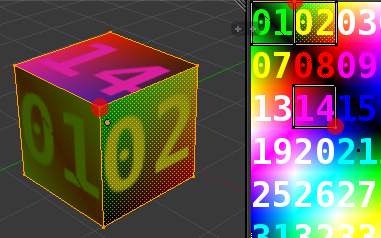

Der LS3-Export kann unter „File → Export → Zusi Landscape (.ls3)“ oder unter „Leertaste → Export LS3“ aufgerufen werden.

Technische Erklärung: In Blender kann ein Knoten mehrere UV-Koordinaten haben (eine pro Fläche, zu der er gehört). Im Bild sieht man, dass der markierte Knoten im UV-Editor drei Mal auftaucht: zweimal zwischen „01“ und „02“ (beide UV-Knoten liegen dabei übereinander) und einmal bei „14“.

In Zusi kann ein Knoten dagegen nur eine UV-Koordinate haben. Daher wird der markierte Knoten für jede Fläche, zu der er gehört, als separater Knoten exportiert. Die Optimierung erkent nun, dass zwei der exportierten Vektoren (der markierte Knoten als Teil der Fläche 01 und der markierte Knoten als Teil der Fläche 02) die gleiche Position, den gleichen Normalenvektor und die gleiche UV-Koordinate haben, und führt sie zusammen. Dies geschieht mit einer gewissen Toleranz, da man die UV-Koordinaten im Allgemeinen nicht exakt einstellt. Diese Toleranz lässt sich mit den drei Schiebereglern unterhalb von „Optimize mesh“ einstellen.

Es kann manchmal nötig sein, ein Zusi-Subset als mehrere Objekte anzulegen. Beispielsweise kann ein Wagenkasten zum größten Teil symmetrisch sein, sodass man mit dem Mirror-Modifier arbeiten kann. Einige Teile wie Beschriftungen können jedoch auch nur einseitig vorkommen. In diesem Falle kann man die beiden Objekte getrennt anlegen und sie beim Export zu einem Subset verschmelzen.
Standardmäßig werden alle Objekte, die ein gemeinsames Material besitzen, zu einem Subset zusammengefasst. Der Name des Subsets entspricht dem Materialnamen, für Objekte ohne Material lautet er „no_material“. Manchmal ist es jedoch nötig, ein oder mehrere Objekte in ein separates Subset zu packen, beispielsweise für Subset-Animationen. In diesem Falle trägt man in den Objekteigenschaften unter „Subset name“ den Namen des Subsets ein. Alle Objekte innerhalb eines Subsets müssen dasselbe Material besitzen.
Beim Export werden die Subsets aufsteigend nach Namen geordnet.
Mehrere Varianten eines Objekts unterscheiden sich oft nur in Details. Ein Beispiel sind unterschiedliche Lackierungen, bei denen im Idealfall nur die Textur ausgetauscht werden muss. Um solche Varianten effizient bauen zu können, wird die Bauweise unterstützt, alle Varianten in einer Datei zu bauen. Gerade nicht benötigte Objekte kann man in Blender mit der Taste „H“ unsichtbar machen, mit „Alt+H“ werden sie wieder sichtbar. Die Funktion „Varianten anzeigen“ automatisiert dieses Verstecken und Zeigen von Objekten.
Varianten müssen zunächst global für die Szene definiert werden. Dies geschieht in den Szeneneinstellungen: Über die Knöpfe „+“ und „-“ können Varianten hinzugefügt und gelöscht werden.

Für jedes Objekt und jede Textur kann nun die Sichtbarkeit festgelegt werden. Dazu ist für jede Variante ein Ankreuzfeld vorgesehen (siehe Screenshot weiter oben). Standardmäßig sind Objekte und Texturen immer sichtbar. Es kann nun festgelegt werden, dass das Objekt/die Textur nur in den ausgewählten Varianten sichtbar sein soll („Visible only in selected variants“) oder nur in den ausgewählten Varianten unsichtbar sein soll („Visible in all but the selected variants“).
Beim Export kann nun ausgewählt werden, welche Varianten in die exportierte Datei übernommen werden sollen. Die objekt- und texturspezifischen Varianteneinstellungen haben nur dann einen Effekt, wenn hier eine oder mehrere Varianten ausgewählt werden, ansonsten sind alle Objekte und Texturen sichtbar.
Diese Funktion erlaubt die Auswahl einer oder mehrerer Varianten (wie beim Export) und blendet die Objekte und Texturen aus, die in den ausgewählten Varianten nicht sichtbar sind. Aufzurufen ist sie im Menü des 3D-Fensters unter „View → Show Variants …“. Die Varianten-Auswahlliste wird dann im „Tool Shelf“-Bereich auf der linken Seite des 3D-Fensters (Taste T) gezeigt.

Beim Auswählen einer Variante wird die Änderung im 3D-Fenster sofort sichtbar.
In der Blender-Datei können einige Zusi-spezifische Einstellungen hinterlegt werden. Auf den folgenden Bildern ist zu sehen, wo sich die Bedienelemente des Mesh-Subset-Editors in Blender wiederfinden.


Es besteht die Möglichkeit, Kanten explizit als scharf zu markieren. Dann werden die Knoten, aus denen diese Kanten bestehen, von der Mesh-Optimierung unabhängig vom Winkel zwischen den Normalen niemals zusammengefasst.
In Blender kann eine Kante unter „Mesh → Edges → Mark sharp“ als scharf markiert werden. Sie wird dann im Editmode blau markiert:

Ein Beispiel soll den Unterschied verdeutlichen. Die Kanten des rechten Zylinders sind alle als scharf markiert, die des linken Zylinders nicht.

Im Zusi-Modellbetrachter wird der Unterschied deutlich: Der linke Zylinder wirkt glatt und rund, beim rechten kann man die einzelnen Flächen erkennen:

Der LS3-Import kann unter „File → Import → Zusi Landscape (.ls3)“ oder unter „Leertaste → Import LS3“ aufgerufen werden. Er dürfte selbsterklärend (und wahrscheinlich nicht ganz fehlerfrei) sein.
Der Pfad zum Zusi-Datenverzeichnis muss momentan noch manuell eingestellt werden, um relative Pfadangaben korrekt auflösen zu können. Eine Anleitung dazu findet sich in der Datei zusiconfig.py.default.